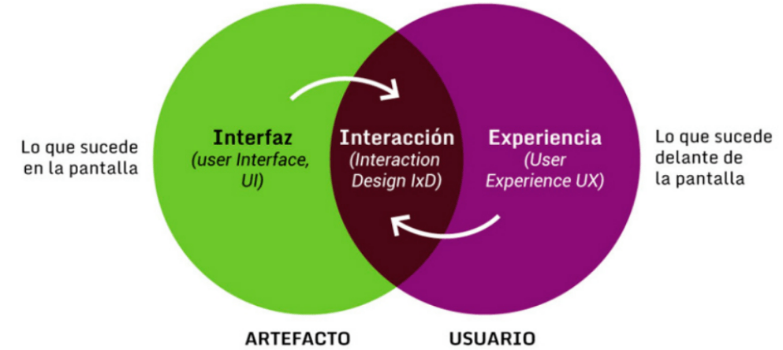

Taller de Programación Web
por
Ivan Robles
Volver al Índice
Esta obra está bajo una Licencia Creative Commons Atribución-CompartirIgual 4.0 Internacional
03Bases Prácticas Extra
Temas a Ver en esta Unidad
- Principios de Diseño
- Herramientas en la Programación Web
- Frameworks, Paradigmas y otros Recursos
Principios de Diseño Web
En resumen:
Como guías de diseño en nuestras páginas web, podemos ayudarnos de principios y métodos en que coinciden los buenos diseños y tendencias actuales
Panal UX Peter Morville:
- Útil
El contenido debe ser original y satisfacer una necesidad
- Utilizable
El sitio debe ser fácil de usar
- Deseable
Las imágenes, identidad, marca y otros elementos de diseño se utilizan para evocar emoción y aprecio
- Localizable
El contenido debe ser navegable y localizable dentro y fuera del sitio
- Accesible
El contenido debe ser accesible para las personas con discapacidad
- Creíble
Los usuarios deben confiar y creer en lo que se les dice
De acuerdo a el Information Architecture Institute: “La arquitectura de la información es la práctica de decidir cómo organizar las partes de algo para que sea comprensible”
Sus componentes son:
- Sistemas de Organización
- Sistemas de Etiquetado
- Sistemas de Navegación
- Sistemas de Búsqueda
Principios a Seguir de AI:
- Arquitectura de Sitio debe ser Plana: Tanto los usuarios como los rastreadores de búsqueda podrán acceder fácilmente a tu sitio y podrá estar mejor posicionado.
- Página Web Simple: Minimalismo, la estructura debe ser lo más sencilla posible.
- Categorías: Ordenar/clasificar la información, de esta manera, los usuarios podrán encontrar lo que buscan fácil.
Principios a Seguir de AI:
- Usar URL Estructuradas: De mano con las categorías, las URL del sitio deben estar igual de organizadas. Entre más cortas, mejor.
- Mapa de Sitio: Esta es una buena manera de hacer fácil la navegación para los usuarios y optimizar el sitio para que los buscadores lo tomen en cuenta y lo coloquen en una posición más alta. Consiste en archivos que proporcionan información sobre las páginas, los videos y otros elementos de tu sitio, así como la relación entre ellos (puede estar en formato XML, por ejemplo).
Metodologías en AI
- Estructuras Jerárquicas: siempre es recomendable plasmar las estructuras primero en algún diagrama para poder visualizar qué corresponde a qué.
- Wireframes: La definición de wireframe es, básicamente, un modelo o prototipo que representa la vista del usuario de forma esquemática sin elementos de diseño: color o tipografías.
Metodologías en AI
- Taxonomía: Es la forma de nombrar los contenidos y su forma de agruparse. La mejor forma para ordenar esto es hacer tarjetas con la información e irlas nombrando a medida que se vayan clasificando.
- Inventario de Contenido: A través de un inventario podemos tener toda la información que vamos a ubicar en el sitio. Este documento nos permitirá no perder nada y ser cuidadosos con la forma de estructurarla.
IxD
Interaction Design
El diseño de interacción (IxD) define la estructura y el comportamiento de sistemas interactivos. Los diseñadores de interacción buscan crear relaciones significativas entre las personas y los productos o servicios que estos usan, desde computadoras hasta dispositivos móviles, aparatos y más...
Fuentes: https://blog.acantu.com/que-es-diseno-interaccion/ , https://ixda.org/ixda-global/about-history/
- Palabras: "Las palabras, especialmente las que se utilizan en las interacciones, como las etiquetas de los botones, deben ser significativas y fáciles de entender. Deben comunicar información a los usuarios, pero no demasiada información que abrume al usuario."
- Representaciones visuales: "Se trata de elementos gráficos como imágenes, tipografía e iconos con los que interactúan los usuarios. Suelen complementar las palabras que se utilizan para comunicar información a los usuarios."
- Espacio: "Con lo que interactúa el usuario en el mundo real. Estos pueden ser objetos físicos de hardware como un mouse, apuntador, teclado, joystick, que son utilizados como herramientas de mando."
- Tiempo: Se refiere a la duración que el usuario pasa interactuando con las palabras, representaciones visuales y el espacio.
- Comportamiento: "En la que se incluyen las emociones y reacciones que tiene el usuario al operar, presentar, utilizar o realizar una acción en el sistema."
La psicología de Gestalt
O llamada también: “La psicología De La Forma“ es una corriente psicológica que surge en Alemania a principios del siglo XX por Max Wertheimer, Wolfgang Köhler, Kurt Koffka y Kurt Lewin. Donde Gestalt en alemán es “forma” o “configuración” la cual tiene leyes que explican “el origen de las percepciones a partir de los estímulos.”
Se basa en el Axioma:
El todo es más que la suma de sus partes.
principios de Gestalt
Herramientas de Programación Web
Frameworks
“Framework” se traduce a “Marco de Trabajo” en Inglés
En programación nos referimos a tanto un conjunto de bibliotecas (libraries), módulos y partes de software incluso lenguajes interpretados, así como técnicas, conceptos, patrones, esquemas y criterios que ayudan a programar software basado en todo esto y tener una misma base (por ejemplo) para un equipo de trabajo y puedan ir construyendo software dentro de los mismos principios y estilos principales.
Las “Bibliotecas” (llamadas librerías por el uso ) son un conjunto de funciones, clases u otros items listos para usarse por medio de una API bien definida.
No se debe confundir una Biblioteca con un Framework, un Framework puede contener librerías, pero no al revés.
Tailwindcss
Es un Framework CSS que permite tanto flexibilidad como sencillez
Vue.js
Es un Framework Javacript Progresivo que permite crear interfaces de usuario
Una API [Application Programming Interface] es la interfaz que permite a dos componentes de software independientes intercambiar información. Una API actúa como intermediaria entre las funciones internas del software y las externas, creando un intercambio de información tan fluido que a menudo pasa desapercibido para el usuario final
Es normal, y a veces recomendado usar librerías para funcionalidades que necesitemos en nuestra página web, aunque ahora estemos viendo librerías de CSS (el cual no es un lenguaje de programación como tal) realmente conviene saber qué herramientas usar, cuándo y cómo
Porque, es posible (y a veces mejor) usar librerías que no estén relacionadas con ningún framework. Por ejemplo está este sitio que permite buscar librerías por palabras clave: https://libraries.io/
Git (Control de Versiones)
Git es un sistema de control de versiones distribuido, gratuito y de código abierto, diseñado para gestionar desde proyectos pequeños hasta muy grandes con rapidez y eficacia.
- Es casi una obligación conocer Git para un puesto de Desarrollador Frontend
- Facilita las versiones del código fuente de cualquier software
- Su funcionamiento es muy similar a otros sistemas de control de código como Mercurial, por ejemplo
- Se puede manejar desde scripts en terminal, así como en clientes gráficos sencillos así como plugins en varios IDEs
Un generador de sitios estáticos es una herramienta que genera un sitio web HTML estático completo basado en datos brutos y un conjunto de plantillas. Esencialmente, un generador de sitios estáticos automatiza la tarea de codificar páginas HTML individuales y las prepara para servir a los usuarios por adelantado. Como estas páginas HTML están preconstruidas, pueden cargarse muy rápidamente en los navegadores de los usuarios.
(Traducido) - What is a static site generator?, Enlace: https://www.cloudflare.com/learning/performance/static-site-generator/
- Normalmente están diseñados para usarse desde la terminal
- Pueden automatizar sitios estáticos con rapidez
- Permite una amplia personalización
- Entre los más famosos se encuentran: Hugo, Jekyll, Gatsby, Hexo
Frameworks, Paradigmas y otros Recursos
Una de las herramientas más requeridas y conveninentes de usar a largo plazo es la "Terminal de Comandos" del Sistema Operativo, de esa manera podemos automatizar el trabajo en nuestro entorno local, y en servidor
Como ejemplo, está NODE.JS, el cual es el entorno de ejecución de Javascript del lado del servidor (sin navegador web)
Un poco acerca de Integración Continua & Entrega Continua
CI/CD
Esto es básicamente un concepto conocido también como "Despliegue Continuo", lo que son un conjunto de "cultura" y prácticas que permiten integrar y presentar cambios en el ciclo de vida del software
A continuación vamos a ver unas de las herramientas que nos ayudarán bastante, desde los primeros pasos hasta a proyectos grandes y complejos
Normalmente se incluyen tareas como Control de Versiones, Pruebas, Integración y Despliegue
A todo este conjunto de fases se les llama CI/CD pipeline o tubería de entrega continua
Este rol y funciones propiamente se le llama "Cultura DevOps"
¿ Bundler en JS ?
"Bundle" en Español es "Paquete", en este contexto un "Bundler" es un "Empaquetador", lo cual es una utilidad en Javascript que nos permite optimizar el tamaño de los archivos en producción, pruebas o integración
Parcel.js
Es un Bundler de Javascript que permite hacer multitud de tareas con muy poco esfuerzo
- Optimiza el tamaño de los archivos en tu sitio/página web ¡Incluso las Imágenes!
- Los comandos personalizados son muy cortos y fáciles de entender
- Tiene integración muy buena con Frameworks y librerías CSS y Javascript
- Es una herramienta FOSS (Gratuita y de Código Abierto)
Otras Tecnologías
SPA (Single PAge Application)
...es una implementación de una aplicación web que carga un único documento web, y luego actualiza el contenido del cuerpo de ese único documento a través de APIs de JavaScript como XMLHttpRequest y Fetch cuando hay que mostrar un contenido diferente.
(Mozilla Foundation, SPA(Single Page Application), Enlace: https://developer.mozilla.org/en-US/docs/Glossary/SPA)
Webassembly
... es un lenguaje de bajo nivel, similar al lenguaje ensamblador, con un formato binario compacto que se ejecuta con rendimiento casi nativo y provee un objetivo de compilación para lenguajes como C/C++ y Rust que les permite correr en la web. También está diseñado para correr a la par de JavaScript, permitiendo que ambos trabajen juntos.
(Mozilla Foundation, WebAssembly, Enlace: https://developer.mozilla.org/es/docs/WebAssembly)
Ejemplos de aplicaciones con Webassembly: https://worldofwasm.bubbleapps.io/
Recomendaciones Finales
- Crea una cuenta en github.com y crea repositorios de tus páginas web
- Usa el hosting gratuito de Github Pages u otros como Netlify o Neocities
- Puedes buscar practicas y lecciones en sitios como MDN Mozilla Foundation, Hackerrank , freecodecamp.org
- Haz tu portafolio personal o un blog en una página web (a la vieja escuela: ¡Tú Eres el Web Master Ahora!)
- Comparte el curso con otras personas que les interese saber más de la programación de páginas Web
Enlaces de Interés
- https://www.freecodecamp.org/
- https://developer.mozilla.org/es/
- https://roadmap.sh/frontend
- https://jamstack.org/generators/
- https://staticsitegenerators.net/
- https://blog.maximeheckel.com/posts/guide-to-cicd-for-frontend-developers/
- https://tailwindcss.com/
- https://testing-library.com/docs/ecosystem-jest-dom/
- https://es.vuejs.org/v2/guide/
- https://parceljs.org/
- https://andreasbm.github.io/web-skills/
- https://worldofwasm.bubbleapps.io/
- https://ethereum.org/en/dapps/?category=technology
Pero lo más importante es...
¡Nunca Dejar de Aprender!
FIN
InicioÍndice